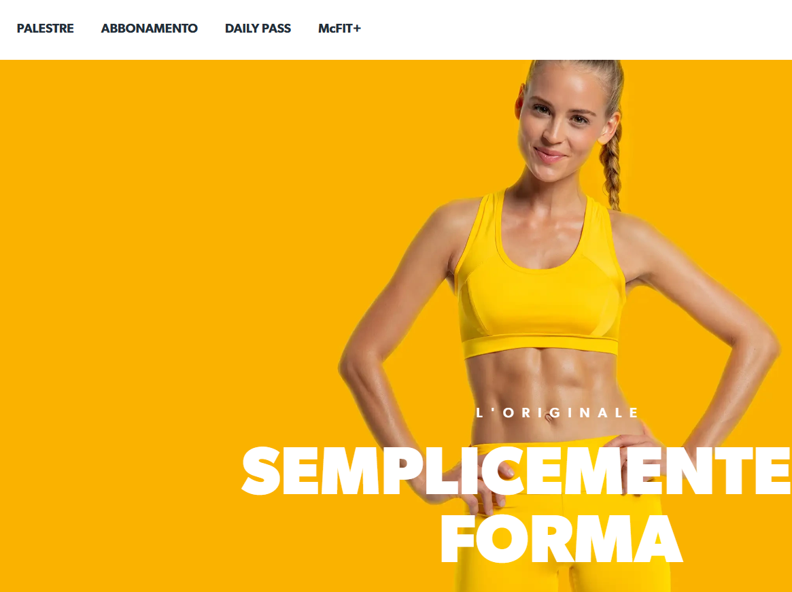
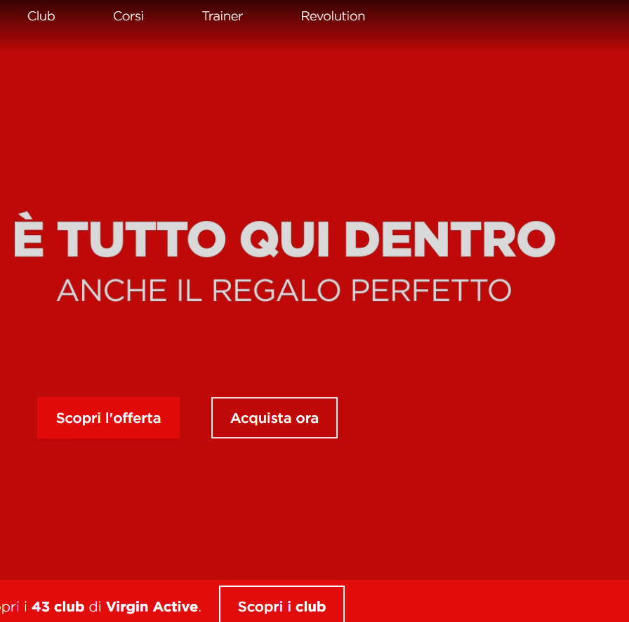
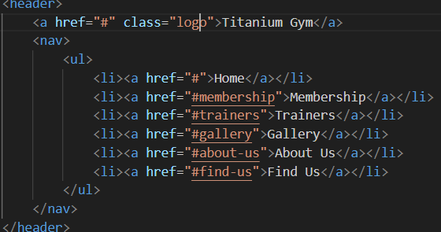
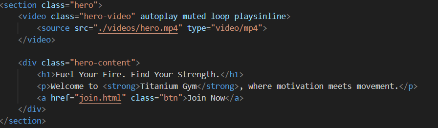
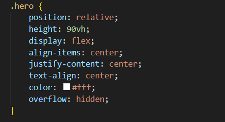
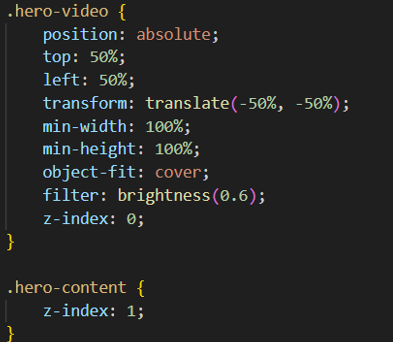

Titanium Gym Website Presentation
Lorenzo Ferrari
Web Communication Exam - UNIMI 12.2025
Introduction
The idea behind this website was inspired by my passion for fitness.
The goal was not just to design a good-looking website, but also create
one which looks informative, motivating and true to what someone would
expect from a real gym website.
I wanted to provide information about:
- subscriptions plans available to members
- trainers working in the gym and their skills
- showcasing gym facilities
- the location
Examples Of Gym’s Website


Coulour Palette and Visual
Before I even started creating the HTML structure, I’ve selected a
coulour palette that could reflect the identity of a gym. In some
sections, I chose dark and bolder tones to create a sense of power,
motivation and determination; qualities that lie at the core of physical
training. In contrast, in some other sections I’ve used lighter colours
to balance the overall design.

Navigation Bar and Header
I’ve decided to put the navigation bar at the top of the page, using
the semantic “nav” element along with “ul” and “li” to structure the
menu items. Additionally, I’ve included the “a” tag so that when a user
clicks on a menu option, the website automatically jumps to the
corresponding section they’ve selected.

Hero Video
On the main homepage, I’ve decided to use a full-screen video because
I wanted the website to be more dynamic. It’s also possible to see the
slogan of Titanium Gym. My intention was to combine the motion of the
video and the slogan to:
- capture viewer’s attention
- convey the energy and spirit of the gym
- give the website a modern and engaging feel.
How was it possible?



Containers
The goal of this website is to increase gym’s visibility and
effectively showcase all the services it offers. I wanted the users to
easily compare, analyze, and understand the available services in a
clear, organized, and polished manner. For this reason, in both the
Membership and Trainer sections, I’ve decided to present the information
using card-style containers, which provide a horizontal visually
structured and user-friendly layout.
Symmetrical Gallery Section
I’ve designed the gallery section to showcase gym’s facilities and
equipment. The images are structured in a symmetrical grid, creating
balance and order. This layout feels both modern and elegant, while also
making it easy for users to view the content very quickly.


The About Us Section
The “About Us” Section was designed to provide visitors a deep
understanding of Titanium Gym’s mission, values and identity,
emphasizing that fitness is not just a routine but a lifestyle.
Locating the Gym easily
I’ve included the “Map Section” at the end of the website by
embedding a Google Maps iframe to help users easily locate the gym. This
interactive feature improve user experience by allowing visitors to find
the gym directly on the website, without having to leave the website,
which is an expected feature in modern websites.
Join Titanium Gym World
I wanted to create an interactive website in which, when a user
clicks on “Join” or “Sign Up”, they will be directed to a form page
where they can enter their information to join Titanium Gym World. The
form allows users to provide: First Name, Last Name, Email, Credit or
Debit Card information, and Birthday.